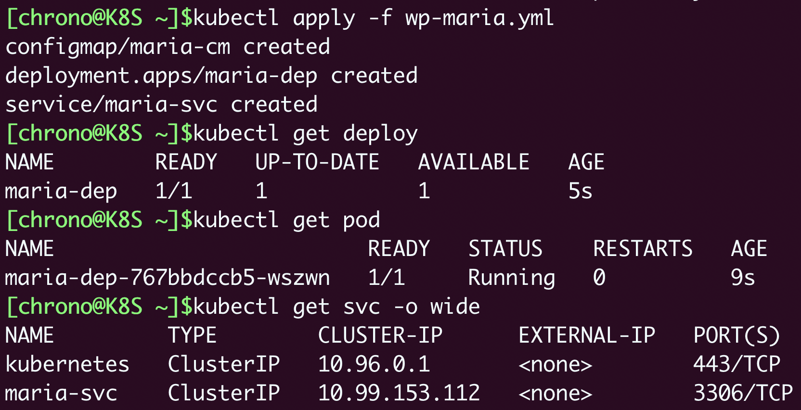
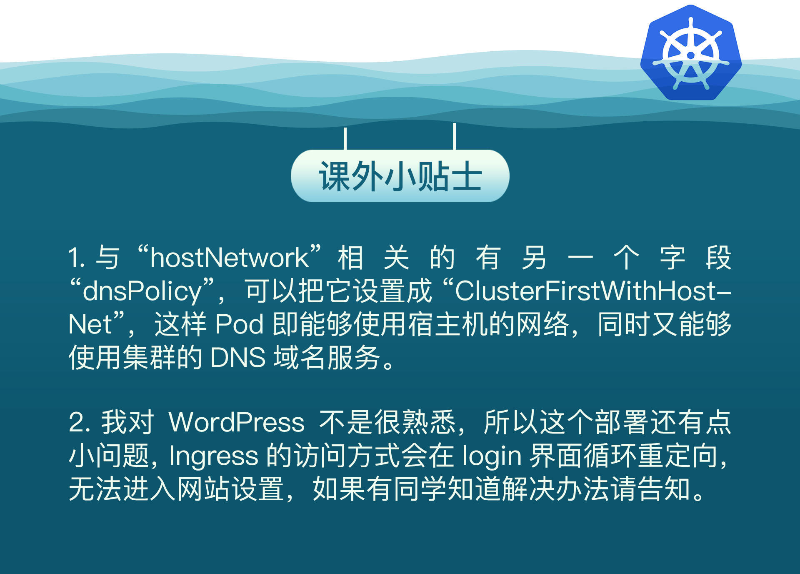

- 00 开篇词 迎难而上，做云原生时代的弄潮儿.md
- 00 课前准备 动手实践才是最好的学习方式.md
- 01 初识容器：万事开头难.md
- 02 被隔离的进程：一起来看看容器的本质.md
- 03 容器化的应用：会了这些你就是Docker高手.md
- 04 创建容器镜像：如何编写正确、高效的Dockerfile.md
- 05 镜像仓库：该怎样用好Docker Hub这个宝藏.md
- 06 打破次元壁：容器该如何与外界互联互通.md
- 07 实战演练：玩转Docker.md
- 08 视频：入门篇实操总结.md
- 09 走近云原生：如何在本机搭建小巧完备的Kubernetes环境.md
- 10 自动化的运维管理：探究Kubernetes工作机制的奥秘.md
- 11 YAML：Kubernetes世界里的通用语.md
- 12 Pod：如何理解这个Kubernetes里最核心的概念？.md
- 13 Job_CronJob：为什么不直接用Pod来处理业务？.md
- 14 ConfigMap_Secret：怎样配置、定制我的应用.md
- 15 实战演练：玩转Kubernetes（1）.md
- 16 视频：初级篇实操总结.md
- 17 更真实的云原生：实际搭建多节点的Kubernetes集群.md
- 18 Deployment：让应用永不宕机.md
- 19 Daemonset：忠实可靠的看门狗.md
- 20 Service：微服务架构的应对之道.md
- 21 Ingress：集群进出流量的总管.md
- 22 实战演练：玩转Kubernetes（2）.md
- 23 视频：中级篇实操总结.md
- 24 PersistentVolume：怎么解决数据持久化的难题？.md
- 25 PersistentVolume + NFS：怎么使用网络共享存储？.md
- 26 StatefulSet：怎么管理有状态的应用？.md
- 27 滚动更新：如何做到平滑的应用升级降级？.md
- 28 应用保障：如何让Pod运行得更健康？.md
- 29 集群管理：如何用名字空间分隔系统资源？.md
- 30 系统监控：如何使用Metrics Server和Prometheus？.md
- 31 网络通信：CNI是怎么回事？又是怎么工作的？.md
- 32 实战演练：玩转Kubernetes（3）.md
- 33 视频：高级篇实操总结.md
- 加餐 docker-compose：单机环境下的容器编排工具.md
- 加餐 谈谈Kong Ingress Controller.md
- 结束语 是终点，更是起点.md
22 实战演练：玩转Kubernetes（2）
你好，我是Chrono。
我们的“中级篇”到今天马上就要结束了，感谢你这段时间坚持不懈的学习。
作为“中级篇”的收尾课程，我照例还是会对前面学过的内容做一个全面的回顾和总结，把知识点都串联起来，加深你对它们的印象。
下面我先梳理一下“中级篇”里讲过的Kubernetes知识要点，然后是实战演示，搭建WordPress网站。当然这次比前两次又有进步，不用Docker，也不用裸Pod，而是用我们新学习的Deployment、Service、Ingress等对象。
Kubernetes技术要点回顾
Kubernetes是云原生时代的操作系统，它能够管理大量节点构成的集群，让计算资源“池化”，从而能够自动地调度运维各种形式的应用。
搭建多节点的Kubernetes集群是一件颇具挑战性的工作，好在社区里及时出现了kubeadm这样的工具，可以“一键操作”，使用 kubeadm init、kubeadm join 等命令从无到有地搭建出生产级别的集群（[17讲]）。
kubeadm使用容器技术封装了Kubernetes组件，所以只要节点上安装了容器运行时（Docker、containerd等），它就可以自动从网上拉取镜像，然后以容器的方式运行组件，非常简单方便。
在这个更接近实际生产环境的Kubernetes集群里，我们学习了Deployment、DaemonSet、Service、Ingress、Ingress Controller等API对象。
（[18讲]）Deployment是用来管理Pod的一种对象，它代表了运维工作中最常见的一类在线业务，在集群中部署应用的多个实例，而且可以很容易地增加或者减少实例数量，从容应对流量压力。
Deployment的定义里有两个关键字段：一个是 replicas，它指定了实例的数量；另一个是 selector，它的作用是使用标签“筛选”出被Deployment管理的Pod，这是一种非常灵活的关联机制，实现了API对象之间的松耦合。
（[19讲]）DaemonSet是另一种部署在线业务的方式，它很类似Deployment，但会在集群里的每一个节点上运行一个Pod实例，类似Linux系统里的“守护进程”，适合日志、监控等类型的应用。
DaemonSet能够任意部署Pod的关键概念是“污点”（taint）和“容忍度”（toleration）。Node会有各种“污点”，而Pod可以使用“容忍度”来忽略“污点”，合理使用这两个概念就可以调整Pod在集群里的部署策略。
（[20讲]）由Deployment和DaemonSet部署的Pod，在集群中处于“动态平衡”的状态，总数量保持恒定，但也有临时销毁重建的可能，所以IP地址是变化的，这就为微服务等应用架构带来了麻烦。
Service是对Pod IP地址的抽象，它拥有一个固定的IP地址，再使用iptables规则把流量负载均衡到后面的Pod，节点上的kube-proxy组件会实时维护被代理的Pod状态，保证Service只会转发给健康的Pod。
Service还基于DNS插件支持域名，所以客户端就不再需要关心Pod的具体情况，只要通过Service这个稳定的中间层，就能够访问到Pod提供的服务。
（[21讲]）Service是四层的负载均衡，但现在的绝大多数应用都是HTTP/HTTPS协议，要实现七层的负载均衡就要使用Ingress对象。
Ingress定义了基于HTTP协议的路由规则，但要让规则生效，还需要Ingress Controller和Ingress Class来配合工作。
- Ingress Controller是真正的集群入口，应用Ingress规则调度、分发流量，此外还能够扮演反向代理的角色，提供安全防护、TLS卸载等更多功能。
- Ingress Class是用来管理Ingress和Ingress Controller的概念，方便我们分组路由规则，降低维护成本。
不过Ingress Controller本身也是一个Pod，想要把服务暴露到集群外部还是要依靠Service。Service支持NodePort、LoadBalancer等方式，但NodePort的端口范围有限，LoadBalancer又依赖于云服务厂商，都不是很灵活。
折中的办法是用少量NodePort暴露Ingress Controller，用Ingress路由到内部服务，外部再用反向代理或者LoadBalancer把流量引进来。
WordPress网站基本架构
简略回顾了Kubernetes里这些API对象，下面我们就来使用它们再搭建出WordPress网站，实践加深理解。
既然我们已经掌握了Deployment、Service、Ingress这些Pod之上的概念，网站自然会有新变化，架构图我放在了这里：

这次的部署形式比起Docker、minikube又有了一些细微的差别，重点是我们已经完全舍弃了Docker，把所有的应用都放在Kubernetes集群里运行，部署方式也不再是裸Pod，而是使用Deployment，稳定性大幅度提升。
原来的Nginx的作用是反向代理，那么在Kubernetes里它就升级成了具有相同功能的Ingress Controller。WordPress原来只有一个实例，现在变成了两个实例（你也可以任意横向扩容），可用性也就因此提高了不少。而MariaDB数据库因为要保证数据的一致性，暂时还是一个实例。
还有，因为Kubernetes内置了服务发现机制Service，我们再也不需要去手动查看Pod的IP地址了，只要为它们定义Service对象，然后使用域名就可以访问MariaDB、WordPress这些服务。
网站对外提供服务我选择了两种方式。
一种是让WordPress的Service对象以NodePort的方式直接对外暴露端口30088，方便测试；另一种是给Nginx Ingress Controller添加“hostNetwork”属性，直接使用节点上的端口号，类似Docker的host网络模式，好处是可以避开NodePort的端口范围限制。
下面我们就按照这个基本架构来逐步搭建出新版本的WordPress网站，编写YAML声明。
这里有个小技巧，在实际操作的时候你一定要记得善用 kubectl create、kubectl expose 创建样板文件，节约时间的同时，也能避免低级的格式错误。
- WordPress网站部署MariaDB
首先我们还是要部署MariaDB，这个步骤和在[第15讲]里做的也差不多。
先要用ConfigMap定义数据库的环境变量，有 DATABASE、USER、PASSWORD、ROOT_PASSWORD：
apiVersion: v1
kind: ConfigMap
metadata:
name: maria-cm
data:
DATABASE: 'db'
USER: 'wp'
PASSWORD: '123'
ROOT_PASSWORD: '123'
然后我们需要把MariaDB由Pod改成Deployment的方式，replicas设置成1个，template里面的Pod部分没有任何变化，还是要用 envFrom把配置信息以环境变量的形式注入Pod，相当于把Pod套了一个Deployment的“外壳”：
apiVersion: apps/v1
kind: Deployment
metadata:
labels:
app: maria-dep
name: maria-dep
spec:
replicas: 1
selector:
matchLabels:
app: maria-dep
template:
metadata:
labels:
app: maria-dep
spec:
containers:
- image: mariadb:10
name: mariadb
ports:
- containerPort: 3306
envFrom:
- prefix: 'MARIADB_'
configMapRef:
name: maria-cm
我们还需要再为MariaDB定义一个Service对象，映射端口3306，让其他应用不再关心IP地址，直接用Service对象的名字来访问数据库服务：
apiVersion: v1
kind: Service
metadata:
labels:
app: maria-dep
name: maria-svc
spec:
ports:
- port: 3306
protocol: TCP
targetPort: 3306
selector:
app: maria-dep
因为这三个对象都是数据库相关的，所以可以在一个YAML文件里书写，对象之间用 --- 分开，这样用 kubectl apply 就可以一次性创建好：
kubectl apply -f wp-maria.yml
执行命令后，你应该用 kubectl get 查看对象是否创建成功，是否正常运行：

- WordPress网站部署WordPress
第二步是部署WordPress应用。
因为刚才创建了MariaDB的Service，所以在写ConfigMap配置的时候“HOST”就不应该是IP地址了，而应该是DNS域名，也就是Service的名字maria-svc，这点需要特别注意：
apiVersion: v1
kind: ConfigMap
metadata:
name: wp-cm
data:
HOST: 'maria-svc'
USER: 'wp'
PASSWORD: '123'
NAME: 'db'
WordPress的Deployment写法和MariaDB也是一样的，给Pod套一个Deployment的“外壳”，replicas设置成2个，用字段“envFrom”配置环境变量：
apiVersion: apps/v1
kind: Deployment
metadata:
labels:
app: wp-dep
name: wp-dep
spec:
replicas: 2
selector:
matchLabels:
app: wp-dep
template:
metadata:
labels:
app: wp-dep
spec:
containers:
- image: wordpress:5
name: wordpress
ports:
- containerPort: 80
envFrom:
- prefix: 'WORDPRESS_DB_'
configMapRef:
name: wp-cm
然后我们仍然要为WordPress创建Service对象，这里我使用了“NodePort”类型，并且手工指定了端口号“30088”（必须在30000~32767之间）：
apiVersion: v1
kind: Service
metadata:
labels:
app: wp-dep
name: wp-svc
spec:
ports:
- name: http80
port: 80
protocol: TCP
targetPort: 80
nodePort: 30088
selector:
app: wp-dep
type: NodePort
现在让我们用 kubectl apply 部署WordPress：
kubectl apply -f wp-dep.yml
这些对象的状态可以从下面的截图看出来：

因为WordPress的Service对象是NodePort类型的，我们可以在集群的每个节点上访问WordPress服务。
比如一个节点的IP地址是“192.168.10.210”，那么你就在浏览器的地址栏里输入“http://192.168.10.210:30088”，其中的“30088”就是在Service里指定的节点端口号，然后就能够看到WordPress的安装界面了：
- WordPress网站部署Nginx Ingress Controller
现在MariaDB，WordPress都已经部署成功了，第三步就是部署Nginx Ingress Controller。
首先我们需要定义Ingress Class，名字就叫“wp-ink”，非常简单：
apiVersion: networking.k8s.io/v1
kind: IngressClass
metadata:
name: wp-ink
spec:
controller: nginx.org/ingress-controller
然后用 kubectl create 命令生成Ingress的样板文件，指定域名是“wp.test”，后端Service是“wp-svc:80”，Ingress Class就是刚定义的“wp-ink”：
kubectl create ing wp-ing --rule="wp.test/=wp-svc:80" --class=wp-ink $out
得到的Ingress YAML就是这样，注意路径类型我还是用的前缀匹配“Prefix”：
apiVersion: networking.k8s.io/v1
kind: Ingress
metadata:
name: wp-ing
spec:
ingressClassName: wp-ink
rules:
- host: wp.test
http:
paths:
- path: /
pathType: Prefix
backend:
service:
name: wp-svc
port:
number: 80
接下来就是最关键的Ingress Controller对象了，它仍然需要从Nginx项目的示例YAML修改而来，要改动名字、标签，还有参数里的Ingress Class。
在之前讲基本架构的时候我说过了，这个Ingress Controller不使用Service，而是给它的Pod加上一个特殊字段 hostNetwork，让Pod能够使用宿主机的网络，相当于另一种形式的NodePort：
apiVersion: apps/v1
kind: Deployment
metadata:
name: wp-kic-dep
namespace: nginx-ingress
spec:
replicas: 1
selector:
matchLabels:
app: wp-kic-dep
template:
metadata:
labels:
app: wp-kic-dep
spec:
serviceAccountName: nginx-ingress
# use host network
hostNetwork: true
containers:
...
准备好Ingress资源后，我们创建这些对象：
kubectl apply -f wp-ing.yml -f wp-kic.yml

现在所有的应用都已经部署完毕，可以在集群外面访问网站来验证结果了。
不过你要注意，Ingress使用的是HTTP路由规则，用IP地址访问是无效的，所以在集群外的主机上必须能够识别我们的“wp.test”域名，也就是说要把域名“wp.test”解析到Ingress Controller所在的节点上。
如果你用的是Mac，那就修改 /etc/hosts；如果你用的是Windows，就修改 C:\Windows\System32\Drivers\etc\hosts，添加一条解析规则就行：
cat /etc/hosts
192.168.10.210 wp.test
有了域名解析，在浏览器里你就不必使用IP地址，直接用域名“wp.test”走Ingress Controller就能访问我们的WordPress网站了：

到这里，我们在Kubernetes上部署WordPress网站的工作就全部完成了。
小结
这节课我们回顾了“中级篇”里的一些知识要点，我把它们总结成了思维导图，你课后可以对照着它查缺补漏，巩固学习成果。

今天我们还在Kubernetes集群里再次搭建了WordPress网站，应用了新对象Deployment、Service、Ingress，为网站增加了横向扩容、服务发现和七层负载均衡这三个非常重要的功能，提升了网站的稳定性和可用性，基本上解决了在“初级篇”所遇到的问题。
虽然这个网站离真正实用还差得比较远，但框架已经很完善了，你可以在这个基础上添加其他功能，比如创建证书Secret、让Ingress支持HTTPS等等。
另外，我们保证了网站各项服务的高可用，但对于数据库MariaDB来说，虽然Deployment在发生故障时能够及时重启Pod，新Pod却不会从旧Pod继承数据，之前网站的数据会彻底消失，这个后果是完全不可接受的。
所以在后续的“高级篇”里，我们会继续学习持久化存储对象PersistentVolume，以及有状态的StatefulSet等对象，进一步完善我们的网站。
课下作业
最后是课下作业时间，还是两个动手操作题：
- 你能否把WordPress和Ingress Controller改成DaemonSet的部署方式？
- 你能否为Ingress Controller创建Service对象，让它以NodePort的方式对外提供服务？
欢迎留言分享你的实操体验，如果觉得这篇文章对你有帮助，也欢迎你分享给身边的朋友一起学习。下节课是视频课，我们下节课再见。

© 2019 - 2023 Liangliang Lee. Powered by Vert.x and hexo-theme-book.